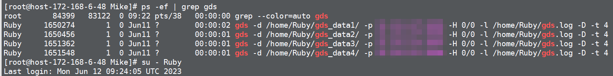
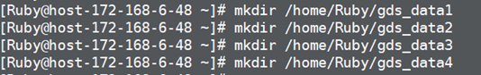

对于沙箱中运行了GDS的GaussDB(DWS)节点
示例如下：

示例如下：

mount --bind /home/Ruby/gds_data1 /var/chroot/home/Ruby/gds_data1 mount --bind /home/Ruby/gds_data2 /var/chroot/home/Ruby/gds_data2 mount --bind /home/Ruby/gds_data3 /var/chroot/home/Ruby/gds_data3 mount --bind /home/Ruby/gds_data4 /var/chroot/home/Ruby/gds_data4
对于沙箱中未运行GDS且已安装客户端的GaussDB(DWS)节点